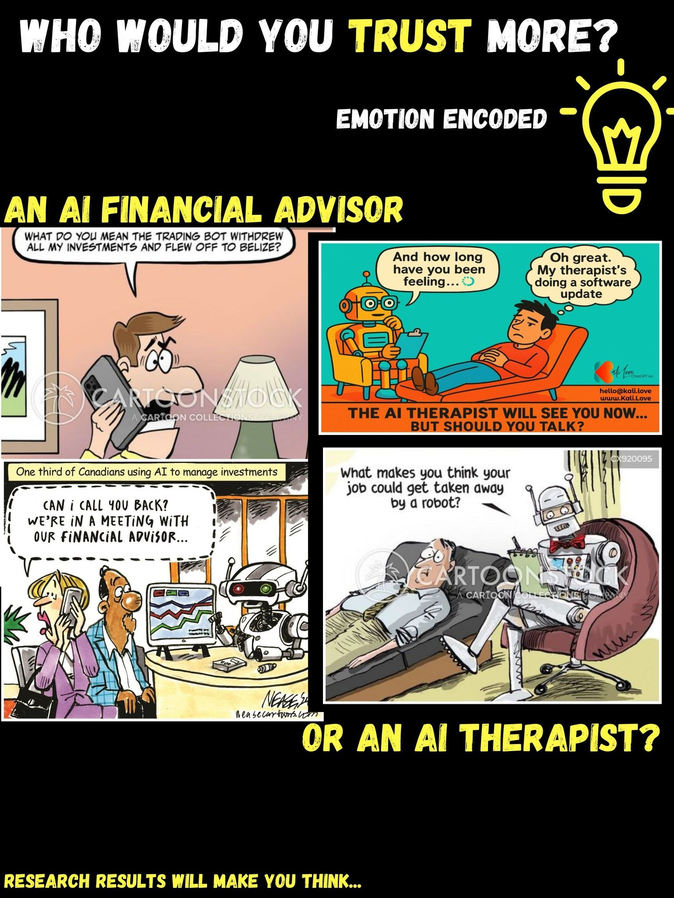

AI Therapist vs AI Financial Advisor: Who Do You Trust More?
I conducted research in the Caribbean Region and got some interesting answers...
Read MoreDive deeper into research, interviews, and insights from Emotion Encoded.
Bill Gates
“If you invent a breakthrough in artificial intelligence, so machines can learn, that is worth 10 Microsofts.”
I conducted research in the Caribbean Region and got some interesting answers...
Read More
Emotion Encoded asked participants "Would you take advice from an AI if it knew your entire personality and history?"
Majority said "Maybe". 15.6% said "No, that's creepy."
Emotion Encoded asked "What would you need to know about an AI tool in order to trust it?"
Some of the responses that the majority of participants chose were:
What can we understand from this? These insights show that trust in AI must be earned through transparency, ethical safeguards, and clear communication. Many companies safeguard their intentions with people's data, as well as the details about their AI development.
As AI continues to transform industries, we must build systems that not only deliver technical performance but also respect human values.